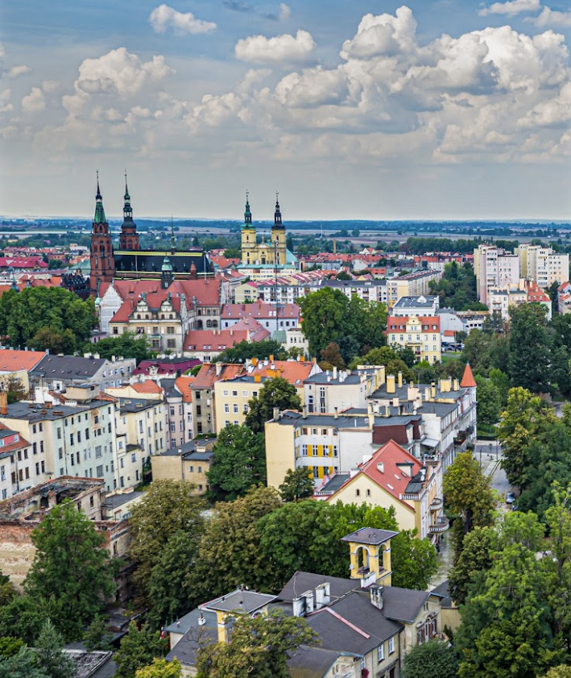
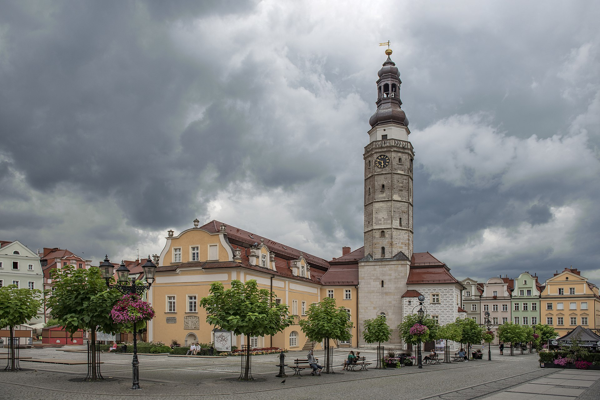
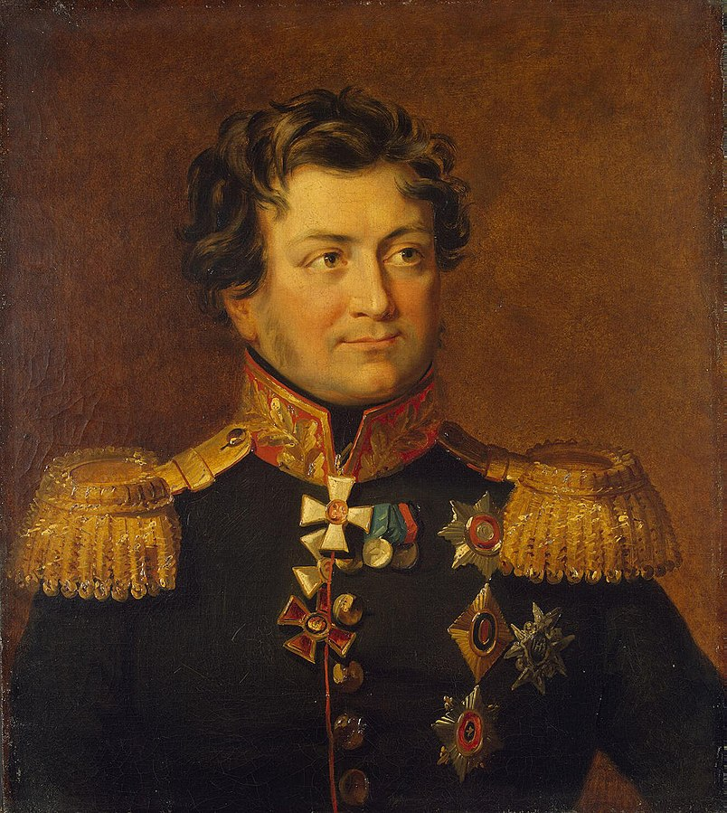
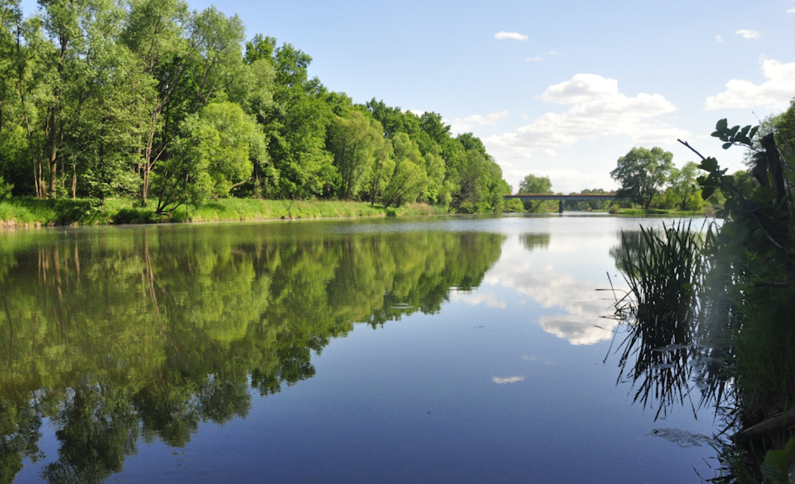
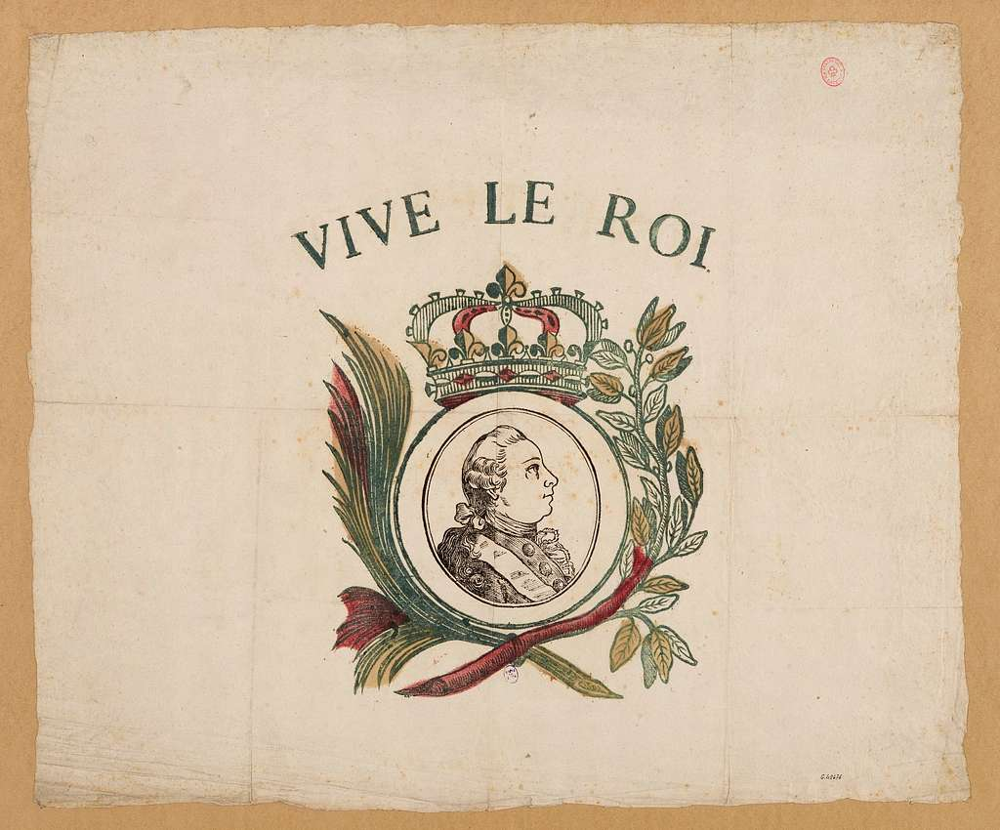

드레스덴을 향하여 (6) - 늙은 블뤼허의 슬픔
게시: 2024-01-15T06:30:07+09:00
나폴레옹이 드레스덴과 그 일대의 방어 작전을 꼼꼼히 준비하며 지타우(Zittau) 일대를 돌아보고 있는 동안, 블뤼허는 그랑다르메를 향해 서둘러 서쪽으로 진격하고 있었습니다. 당연히 그는 자신이 나폴레옹의 제1 목표라는 것은 전혀 모르고 있었습니다. 조미니의 진술에 따라, 블뤼허는 자신이 대면하고 있는 엘베강 일대에서 나폴레옹은 수비 태세를 유지할 것이고 나폴레옹 본인은 먼저 베르나도트의 북부 방면군을 공격할 것이라고 믿었습니다. 거기에 더해, 블뤼허는 나폴레옹이 모르는 군사 기밀 하나를 더 알고 있었습니다. 바로 7월에 작성된 트라헨베르크 의정서(Trachenberg Protocol)에 따른 보헤미아 방면군의 작전 목표였습니다. 그에 따르면, 보헤미아 방면군은 나폴레옹의 후방이자 그랑다르메의 독일내 거점인 드레스덴을 향해 엘베 강변을 따라 진격하게 되어 있었습니다. 나폴레옹이 베를린을 향해 진격하더라도, 드레스덴에 강력한 보헤미아 방면군이 나타나면 허겁지겁 되돌아 갈 것이 확실하니, 그 때 나폴레옹의 발뒤꿈치를 꽉 물고 늘어지는 것이 자신의 임무라고 블뤼허는 생각하고 있었습니다. 그러자면 먼저 나폴레옹의 발뒤꿈치에 바싹 가까이 붙어 있어야 했습니다. 바로 그러기 위해서 아직 휴전 조약 만료 이후 전투 유예 기간 중임에도 불구하고 신사협정을 깨고 중립지대를 가로질러 서쪽으로 진격을 시작했던 것입니다. 그렇게 중립지대를 지나 그랑다르메가 점거하고 있던 지역으로 진입한 뒤에, 블뤼허는 조미니로부터 나온 정보가 사실임에 틀림없다고 확신하게 되었습니다. 네와 막도날 등의 그랑다르메 군단들이 자신들과의 전투를 회피하고 서쪽으로 전면적인 후퇴를 하는 것이 분명했기 때문이었습니다. 침공하는 슐레지엔 방면군은 8~9만에 불과했으니 네와 막도날, 로리스통과 마르몽이 이끄는 4개 군단이 충분히 막아설 수 있을 텐데도 그랑다르메는 간혹 벌어지는 후위대와의 전투를 제외하고는 끊임없이 후퇴를 했습니다. 특히 후퇴하는 그랑다르메 군단들이 카츠바흐(Katzbach)나 보버(Bober) 등의 강을 건널 때 다리를 불사르거나 무너뜨리고 가는 것을 보면 다시 동쪽으로 반격에 나설 가능성이 매우 낮았습니다. 뿐만 아니라, 그랑다르메의 부대들은 휴전 기간 도중에 구축했던 요새를 허물고 미처 후송하지 못한 탄약은 폭파시킨 뒤 후퇴하는 등, 꼬리를 말아쥐고 도망치는 기색이 역력했습니다. 특히 8월 20일 드디어 보버강의 오른쪽 강변, 즉 동쪽 강변에 위치한 주요 도시 분츨라우(Bunzlau)에 진입할 때는 그랑다르메가 뒤늦게 시내의 탄약고를 폭파시키는 바람에 모든 시내 건물들이 크고 작은 피해를 입고 온 거리에 파편이 떨어졌습니다.

(오데르강의 지류인 카츠바흐강에 접하고 있는 리그니츠(Liegnitz, 폴란드어로는 Legnica) 시내의 모습입니다. 저 멀리 카츠바흐강이 보입니다. 모든 것이 서울에 집중된 우리나라와는 달리 유럽은 저런 작은 지방 도시도 깔끔하고 아름다운 건축물이 많은 것이 참 부럽습니다.)

(지금은 폴란드 도시인 Bolesławiec(볼레스와비어츠)가 된 분츨라우의 시장 광장과 시청의 아담한 모습입니다. 지금도 인구 3만8천의 소도시입니다.) 그렇게 후퇴하는 적의 뒤를 바싹 뒤쫓는 것은 매우 신나고 흥분되는 일입니다. 블뤼허도 19일과 20일 연달아 와이프에게 편지를 쓰며 '수천의 프랑스군을 무찔렀고 수십 문의 대포 및 탄약차를 노획했다'라고 자랑했습니다. 이런 자랑은 결코 허풍이 아니었습니다. 실제로 곳곳에서 전투가 벌어졌는데 후퇴하는 그랑다르메는 대부분의 전투에서 별다른 투지를 보여주지 못하고 맥없이 후퇴하기 바빴습니다. 특히 8월 19일, 뢰벤베르크(Löwenberg)를 향해 후퇴하는 막도날의 제11군단을 뒤쫓던 랑제론 휘하 룻제비치(Alexandr Yakovlevich Rudzevich) 장군의 엽병(Jäger, 사냥꾼이라는 뜻) 연대들은 시버나이헨(Siebeneichen) 마을에서 몇 번씩이나 마을을 뺏고 빼앗는 격전을 치른 뒤 결국 그랑다르메 부대를 격파하고 그 마을을 점령했습니다. 이 사건 자체는 엄청난 사건이 아니었습니다만, 여기서 특이한 사건이 하나 벌어집니다. 이들과 함께 싸우게 되어 있던 우크라이나 코삭 기병들이 전투에는 참여하지 않고 그 근처에서 달아나던 일단의 수송마차 부대를 포획했는데, 여기에는 막도날 원수의 개인 짐마차까지 포함되어 있었습니다. 여기에는 막도날의 군복이며 식기류, 각종 개인 귀중품 등이 들어 있었을 뿐만 아니라 나폴레옹과 주고 받은 편지들, 그리고 결정적으로 프랑스군이 사용하던 암호의 키(key)까지 포함되어 있었습니다. 그러나 이 엄청난 군사적 가치를 가진 편지들과 키는 끝내 블뤼허의 사령부에 전달되지 못했습니다. 함께 나포된 다른 짐마차에는 제11군단의 금고도 실려 있었는데 여기에 1만 개의 금화가 있었기 때문에, 코삭들은 이 금화를 나눠가지는데 정신이 없었기 때문이었습니다. 여기서 프랑스군의 암호 키가 노획된 사건은 나중에 엉뚱한 파장을 일으키기도 합니다.

(룻제비치 장군의 초상화입니다. 그는 원래 크림 반도의 타타르 가문 출신이라고 합니다. 랑제론은 그의 지휘하에 있던 이 룻제비치에 대해 '군인에게 필요한 모든 장점, 활동성과 용기, 침착함과 신중함 등을 모두 갖춘 뛰어난 인재'라고 평가했습니다. 다만 그는 좀 허풍이 심하고 편파적인 행동을 하는 경우가 있어서, 부하들에게나 상관들에게나 좀 까다로운 존재이기도 했다고 토를 달았습니다. 룻제비치는 1813년 당시 36세의 젊은 나이였는데, 장수한 편은 아니라서 53세에 병사했습니다.) 이 추격 과정에서 블뤼허에게 항상 좋은 일만 있었던 것은 아니었습니다. 그렇게 쫓고 쫓기는 과정 중에 네 원수의 제3군단이 블뤼허 휘하의 3개 군단, 즉 랑제론과 자켄의 러시아 군단들과 요크의 프로이센 군단 사이에 들어 가는 일이 생겼습니다. 처음에는 네도 요크도 랑제론도 그 사실을 몰랐으나, 8월 19일 저녁, 블뤼허와 그나이제나우는 각 군단에서 보내온 정찰 보고서를 읽다가 이 사실을 깨달았습니다. 네의 제3군단보다 오히려 약간 더 서쪽에 있던 요크가 네와 격돌하여 멱살을 잡고 뒹구는 동안, 랑제론과 자켄이 그 방향으로 밤샘 강행군을 한다면 충분히 네를 포위할 수 있었던 것입니다. 블뤼허는 뛸 듯이 기뻐하며 즉각 명령서를 요크와 랑제론, 자켄에게 각각 보내 네를 포위하도록 했습니다. 그런데 정말 뜻밖에도, 랑제론과 자켄이 그 명령을 거부하는 사태가 벌어졌습니다. 랑제론의 명령 거부 이유는 '부하 병사들이 너무 지쳤고, 탄약 수송차가 저 후방에 있어서 탄약이 부족한데다, 자신의 주력이 그렇게 이동을 하면 자기 휘하의 전위대가 위험에 노출된다'라는 것이었습니다. 자켄은 '블뤼허의 명령에 따른다면 자신은 후퇴하게 되는 셈인데, 자신이 전방에 다른 강력한 적군과 대치하는 상황에서 이 밤중에 급히 후퇴하는 것이 군사적으로 매우 위험하다'는 이유를 댔습니다. 실은 블뤼허의 이 명령은 블뤼허와 그나이제나우의 설레발에 불과했습니다. 네와 접점을 유지하고 있던 요크가 불과 몇 시간 뒤에 다시 보고서를 보내와 '네의 제3군단이 방금 서쪽으로 이동을 시작했다'라고 알려왔기 때문이었습니다. 즉 랑제론과 자켄이 블뤼허의 명령을 순순히 따랐다면 그냥 헛수고를 한 셈이 되었을 것이라는 뜻이었습니다. 그럼에도 불구하고 러시아 장군들이 이렇게 말도 안되는 이유로 중대한 작전 명령을 거부하는 것은 정말 군법회의 회부감인 명령 불복종이었습니다. 블뤼허는 자신의 명령을 이처럼 모욕적으로 무시하는 러시아 장군들에게 울화가 치밀어 올랐습니다만, 그렇다고 당장 이들을 소환하여 군사재판을 벌이기는 커녕 이들의 명령 거부를 문책하는 편지를 보낼 수도 없었습니다. 그랬다가는 이들이 완전히 틀어져 슐레지엔 방면군 자체가 붕괴될 수도 있기 때문이었습니다. 블뤼허는 이들의 명령 거부가 의도적인 것이 아니라 그냥 단순히 자신의 명령을 잘못 이해한 결과로 빚어진 촌극에 불과하다고 애써 평가했습니다. 이것이 바로 소국의 설움이었습니다. 이런 불쾌한 상황 속에서도 승승장구하던 블뤼허의 추격은 보버강에 다다르자 딱 벽에 부딪힌 것처럼 멈추게 됩니다. 당연히 블뤼허는 알지 못했지만 나폴레옹은 네와 막도날에게 분츨라우와 뢰벤베르크를 거점으로 하여 보버강을 방어선으로 삼으라고 지시한 바 있었습니다. 그러니까 그랑다르메가 블뤼허의 추격 앞에 맥없이 무너진 것은 나폴레옹의 명령에 따라 후퇴한 것일 뿐 결코 슐레지엔 방면군의 공격이 매섭기 때문이 아니었습니다. 분츨라우는 보버강 동쪽에 있는 도시라서 순순히 블뤼허에게 넘겨주었으나, 보버강 서쪽에 집결한 그랑다르메의 부대들은 후퇴를 멈추고 전열을 가다듬는 것이 블뤼허의 정찰병들 눈에도 뚜렷이 들어 왔습니다. 특히 보버강 서쪽에 위치했던 도시인 뢰벤베르크에는 서쪽에서 속속 신규 부대들이 진입하는 것도 보였습니다.

(분츨라우 인근에서의 보버강의 모습입니다. Bober는 독일어로 들어보면 사실상 '보바'로 들립니다. 비슷하게, SuSE 리눅스는 다들 수세 리눅스라고 읽지만 독일어 발음을 들어보면 '수자'라고 들립니다.) 그러던 어느 시점에, 뢰벤베르크 시내에서 갑자기 소란이 일어나면서 귀에 익숙한 프랑스어 함성이 커다랗게 들렸다고 몇몇 정찰병이 보고했습니다. 그 정찰병은 프랑스어를 못하는 사람이었지만 그 프랑스어 함성은 매우 익숙하게 들어 아는 것이었습니다. 바로 "Vive l'Empereur!" (비브 랑프뢰르, '황제 폐하 만세')였습니다.

(영어로는 Long Live the Emperor에 해당하는 이 구호는 원래 프랑스 왕에게 바치는 구호인 Vive le Roi에서 Roi(왕)을 Empereur(황제)로 바꾼 것이었습니다. 그림은 구호와는 달리 별로 오래 못 사신 루이 16세입니다.) Source : The Life of Napoleon Bonaparte, by William Milligan Sloane Napoleon and the Struggle for Germany, by Leggiere, Michael V https://en.m.wikipedia.org/wiki/File:Rudzevich_Alexandr_Yakovlevich.jpg https://picryl.com/media/vive-le-roi-2bb976 https://en.wikipedia.org/wiki/Boles%C5%82awiec
{kind=link}